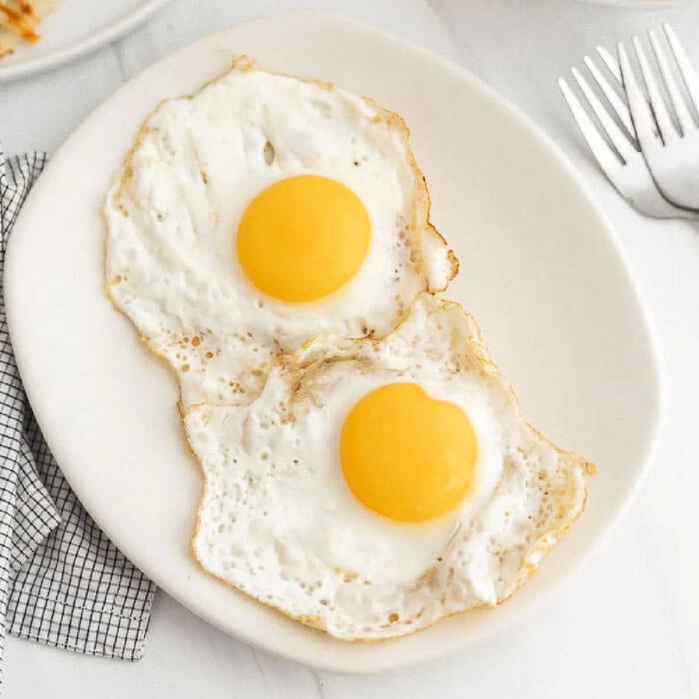

Foes
Foes are gross foods, seriously, who would like these foods, disgusting.
Eggs
Look, they're fine when you use them in things like bread or baked goods, but I swear that these things were not meant to be eaten by themselves, like, why are they wet when their cooked all the way?!?! 0/10 would only wish on my enemies.